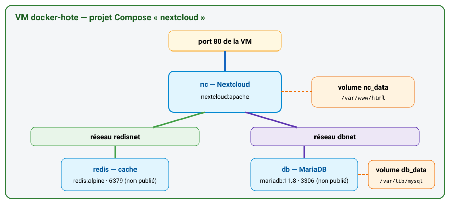
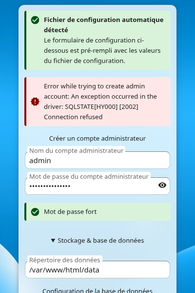
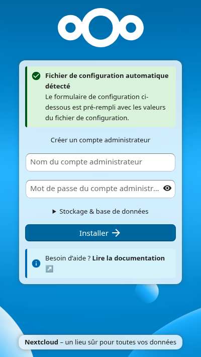
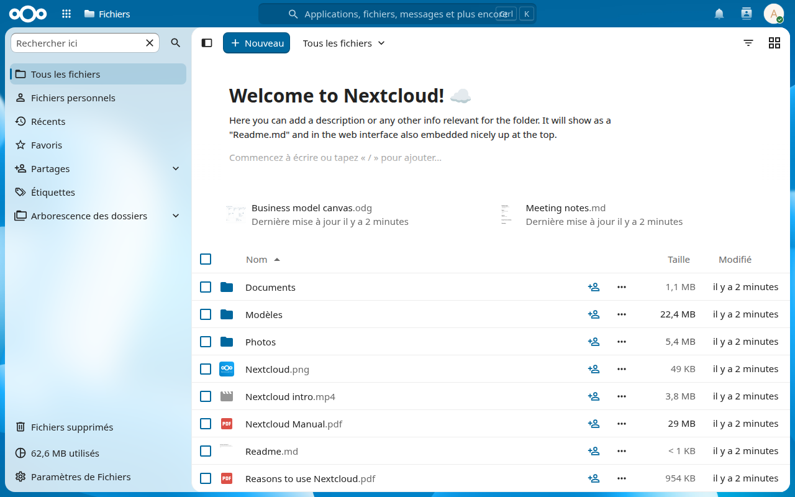

Docker Compose : Nextcloud en une commande¶
Résumé
Une vraie application, c'est rarement un seul conteneur. Nextcloud (un service de partage de fichiers, d'agendas et de contacts, à héberger soi-même) a besoin d'une base de données MariaDB et d'un cache Redis. Lancer et relier ces trois conteneurs à la main demanderait une dizaine de commandes ; Docker Compose les décrit dans un seul fichier et les démarre en une seule commande.
Ce TP explique ce fichier ligne par ligne, déploie Nextcloud, et fait le tour des commandes de Compose : état, journaux, arrêt, suppression. On rencontre au passage une panne typique (le service démarre avant sa base de données) et sa solution, le test de santé. À la fin, Nextcloud fonctionne, et l'on sait décrire n'importe quelle application en Compose.
| Propriété | Valeur |
|---|---|
| Difficulté | Débutant |
| Durée estimée | 2 h (dont quelques minutes de téléchargement) |
| Version décrite | Docker Compose 5.8, Nextcloud 35.0.3, MariaDB 11.8, Redis (image redis:alpine) |
| Place dans le parcours | Partie 8 sur 17 du parcours Docker — jour 2 |
| Dernière mise à jour | 2026-11-24 |
Convention de lecture
🖥️ PC hôte · 🐧 VM docker-hote, connecté en tssr · 🌐 navigateur du PC · ✍️ exercice · 🛟 instantané. Le port 80 de la VM doit être libre : docker ps ne doit montrer que portainer. Il reste environ 600 Mo d'images à télécharger (MariaDB est déjà là depuis la partie 5), qui occuperont environ 2,5 Go sur le disque de la VM.
1. Docker Compose, c'est quoi ?¶
Docker Compose est un outil qui décrit une application à plusieurs conteneurs dans un fichier texte au format YAML, puis la crée, la démarre, l'arrête ou la supprime en une seule commande. Au lieu de taper docker network create, docker volume create et trois docker run avec des dizaines d'options, on écrit une fois pour toutes ce qu'on veut obtenir, et Compose s'en charge.
Pour un administrateur, c'est un énorme progrès :
- le fichier documente l'installation : on sait exactement quelles images, quels ports, quels volumes sont utilisés ;
- il est reproductible à l'identique sur un autre serveur, et se range dans un gestionnaire de versions (Git) ;
- la plupart des logiciels publiés pour Docker fournissent leur fichier Compose tout prêt.
Compose a été installé en partie 1 (paquet docker-compose-plugin). Il s'utilise avec docker compose, en deux mots. L'ancienne commande docker-compose, avec un tiret, était un programme séparé qui n'est plus maintenu ; on la croise encore dans de vieux tutoriels.
Le format YAML en trente secondes
YAML range des informations par indentation : ce qui est décalé vers la droite appartient à la ligne du dessus. On utilise des espaces (jamais de tabulations), en général deux par niveau. Une ligne clé: valeur donne une valeur ; une ligne qui commence par - est un élément de liste. Une erreur d'indentation suffit à rendre le fichier invalide : c'est la première chose à vérifier en cas d'erreur.
2. Le fichier docker-compose.yml expliqué¶
Voici le fichier complet. Il vient du dépôt d'exemples officiel de Docker (awesome-compose), avec une version de MariaDB à jour et les mots de passe du lab :
services:
nc:
image: nextcloud:apache
restart: always
ports:
- 80:80
volumes:
- nc_data:/var/www/html
networks:
- redisnet
- dbnet
environment:
- REDIS_HOST=redis
- MYSQL_HOST=db
- MYSQL_DATABASE=nextcloud
- MYSQL_USER=nextcloud
- MYSQL_PASSWORD=TutoDocker2026!
redis:
image: redis:alpine
restart: always
networks:
- redisnet
expose:
- 6379
db:
image: mariadb:11.8
command: --transaction-isolation=READ-COMMITTED --binlog-format=ROW
restart: always
volumes:
- db_data:/var/lib/mysql
networks:
- dbnet
environment:
- MYSQL_DATABASE=nextcloud
- MYSQL_USER=nextcloud
- MYSQL_ROOT_PASSWORD=TutoDocker2026!
- MYSQL_PASSWORD=TutoDocker2026!
expose:
- 3306
volumes:
db_data:
nc_data:
networks:
dbnet:
redisnet:
Ce fichier contient trois services (un service = un conteneur, ou plusieurs copies du même) : Nextcloud (nc), Redis (redis) pour la mise en cache, et MariaDB (db) comme base de données. Regardons-les un par un.

L'application décrite par le fichier : trois services, deux réseaux, deux volumes.
2.1 Nextcloud (nc)¶
| Ligne du fichier | Explication |
|---|---|
image: nextcloud:apache |
L'image officielle de Nextcloud, dans sa variante avec le serveur web Apache intégré |
restart: always |
Docker relance le conteneur s'il s'arrête, et à chaque démarrage de Docker (donc de la VM) : la politique de redémarrage vue en partie 4 |
ports: - 80:80 |
Publie le port 80 du conteneur sur le port 80 de la VM |
volumes: - nc_data:/var/www/html |
Range les fichiers de Nextcloud (application, configuration, fichiers des utilisateurs) dans le volume nc_data |
networks: |
Branche ce conteneur sur les réseaux redisnet et dbnet : il doit parler aux deux autres services |
environment: |
Les variables d'environnement lues par l'image au premier démarrage |
REDIS_HOST=redis |
Utiliser Redis comme cache, sur la machine nommée redis |
MYSQL_HOST=db |
La base de données est sur la machine nommée db |
MYSQL_DATABASE, MYSQL_USER, MYSQL_PASSWORD |
Nom de la base, utilisateur et mot de passe pour s'y connecter |
redis et db sont des noms de services. Comme en partie 7, Compose branche les conteneurs sur des réseaux personnalisés, où le DNS de Docker résout ces noms : aucune adresse IP n'apparaît dans le fichier.
2.2 Redis (redis)¶
Redis est une base de données en mémoire, très rapide, que Nextcloud utilise comme cache : il y garde ce qu'il a déjà calculé et y gère les verrous de fichiers, ce qui soulage MariaDB.
| Ligne du fichier | Explication |
|---|---|
image: redis:alpine |
Redis, dans une image légère basée sur Alpine Linux |
networks: - redisnet |
Seulement sur redisnet : seul Nextcloud peut le joindre |
expose: - 6379 |
Documente que le service écoute sur le port 6379. Contrairement à ports, cela ne publie rien sur la VM : le port n'est joignable que depuis les réseaux Docker |
2.3 MariaDB (db)¶
| Ligne du fichier | Explication |
|---|---|
image: mariadb:11.8 |
MariaDB, une alternative libre à MySQL, en version 11.8 (maintenue à long terme et recommandée par Nextcloud) |
command: --transaction-isolation=READ-COMMITTED --binlog-format=ROW |
Options passées au serveur MariaDB : ce sont les réglages exigés par Nextcloud pour l'intégrité des transactions |
volumes: - db_data:/var/lib/mysql |
La base de données est rangée dans le volume db_data (partie 5) |
networks: - dbnet |
Seulement sur dbnet : seul Nextcloud peut joindre la base |
MYSQL_DATABASE, MYSQL_USER, MYSQL_PASSWORD |
Au premier démarrage, l'image crée cette base et cet utilisateur |
MYSQL_ROOT_PASSWORD |
Mot de passe de l'administrateur root de MariaDB |
2.4 Volumes et réseaux¶
Ces deux sections déclarent les volumes et les réseaux utilisés plus haut. Compose les crée s'ils n'existent pas, en leur ajoutant le nom du projet en préfixe (ici nextcloud_, le nom du dossier) : nextcloud_db_data, nextcloud_dbnet… Deux applications Compose peuvent donc avoir chacune leur volume db_data sans se mélanger.
Les deux réseaux séparés appliquent la segmentation vue en partie 7 : Redis et MariaDB ne se voient pas, et seul Nextcloud est relié aux deux.
Mots de passe et HTTP
Dans ce lab, les mots de passe sont écrits en clair dans le fichier, et Nextcloud répond en HTTP non chiffré. En production, les mots de passe vont dans un fichier .env lisible seulement par l'administrateur (chmod 600) ou dans les secrets de Docker Compose, et le service passe en HTTPS : c'est le sujet du jour 3.
3. Déployer Nextcloud¶
3.1 Créer le dossier et le fichier¶
-
🐧 Créer un dossier pour le projet et s'y placer. Le nom du dossier devient le nom du projet Compose :
-
🐧 Créer le fichier avec
nano:Coller le contenu de la section 2 (clic droit dans le terminal Windows), puis enregistrer : Ctrl+X, O (ou Y si
nanoest en anglais), Enter. -
🐧 Faire vérifier le fichier par Compose avant de le lancer :
En cas d'erreur d'indentation, Compose indique la ligne fautive.
docker-compose.yml ou compose.yaml ?
Compose cherche dans le dossier courant un fichier nommé compose.yaml (le nom recommandé aujourd'hui), compose.yml, docker-compose.yaml ou docker-compose.yml. Les quatre fonctionnent ; on garde ici le nom le plus répandu dans les tutoriels.
3.2 Lancer les conteneurs¶
🐧 Démarrer toute l'application, en arrière-plan (-d) :
Image redis:alpine Pulling
Image nextcloud:apache Pulling
…
Image nextcloud:apache Pulled
Network nextcloud_dbnet Creating
Volume nextcloud_nc_data Creating
Network nextcloud_redisnet Creating
Volume nextcloud_db_data Creating
…
Container nextcloud-redis-1 Started
Container nextcloud-db-1 Started
Container nextcloud-nc-1 Started
Compose télécharge les images absentes, crée les réseaux et les volumes, puis crée et démarre les trois conteneurs. Leur nom suit le modèle projet-service-numéro : nextcloud-nc-1. Le premier lancement prend une minute environ, à cause des téléchargements.
4. Vérifier que tout tourne¶
4.1 L'état des conteneurs¶
🐧 docker compose ps liste les conteneurs du projet (il faut être dans le dossier ~/nextcloud) :
NAME IMAGE COMMAND SERVICE CREATED STATUS PORTS
nextcloud-db-1 mariadb:11.8 "docker-entrypoint.s…" db 3 minutes ago Up 3 minutes 3306/tcp
nextcloud-nc-1 nextcloud:apache "/entrypoint.sh apac…" nc 3 minutes ago Up 3 minutes 0.0.0.0:80->80/tcp, [::]:80->80/tcp
nextcloud-redis-1 redis:alpine "docker-entrypoint.s…" redis 3 minutes ago Up 3 minutes 6379/tcp
Seul nc publie un port (0.0.0.0:80->80/tcp) ; 3306/tcp et 6379/tcp, sans flèche, ne sont joignables que depuis les réseaux de Docker.
4.2 Les journaux¶
🐧 Les journaux de tous les services, ou d'un seul :
db-1 | 2026-11-24 6:10:52 0 [Note] mariadbd: Event Scheduler: Loaded 0 events
db-1 | 2026-11-24 6:10:52 0 [Note] mariadbd: ready for connections.
db-1 | Version: '11.8.9-MariaDB-ubu2404' socket: '/run/mysqld/mysqld.sock' port: 3306 mariadb.org binary distribution
Chaque ligne est préfixée par le nom du service. docker compose logs -f suit les journaux en direct (Ctrl+C pour arrêter). On peut aussi utiliser les commandes habituelles avec le nom complet du conteneur : docker logs nextcloud-nc-1.
5. Terminer l'installation de Nextcloud¶
5.1 Attendre que la base de données soit prête¶
Au premier démarrage, MariaDB crée sa base : cela prend une dizaine de secondes, et Nextcloud copie ses fichiers dans son volume. 🐧 Attendre la ligne MariaDB init process done suivie de ready for connections dans docker compose logs db.
« Error while trying to create admin account … Connection refused »

Installation lancée trop tôt : MariaDB n'écoutait pas encore.
Ce message apparaît si l'on clique sur Installer pendant que MariaDB s'initialise encore : Nextcloud frappe à la porte de la base, et personne ne répond (connection refused). Attendre quelques secondes et cliquer à nouveau sur Installer. Si l'erreur change ou persiste, repartir de zéro : docker compose down -v, docker compose up -d, attendre ready for connections dans les journaux de db, puis recommencer. La section 7 montre comment l'éviter pour de bon.
5.2 Créer le compte administrateur¶
-
🌐 Ouvrir
http://IP-de-la-VMdans le navigateur du PC.
L'assistant ne demande que le compte administrateur : la base est déjà configurée.
Grâce aux variables
MYSQL_HOST,MYSQL_DATABASE,MYSQL_USERetMYSQL_PASSWORDdu fichier, Nextcloud connaît déjà sa base de données : l'encadré Fichier de configuration automatique détecté l'indique, et la section Stockage & base de données, repliée, contient les valeurs pré-remplies (hôtedb, utilisateurnextcloud, basenextcloud). Il n'y a rien à y changer. -
🌐 Remplir :
Champ Valeur Nom du compte administrateur adminMot de passe du compte administrateur TutoDocker2026! -
🌐 Cliquer sur Installer et patienter : l'installation prend environ une minute.
-
🌐 Nextcloud propose d'installer des applications recommandées (agenda, contacts, messagerie…) : cliquer sur Ignorer pour gagner du temps. Une fenêtre de bienvenue présente les nouveautés : la fermer avec Passer, puis la croix.

Nextcloud fonctionne : l'application Fichiers, avec ses fichiers d'exemple.
-
🌐 Essayer : créer un dossier, déposer un fichier du PC par glisser-déposer, le télécharger.
5.3 Administrer Nextcloud en ligne de commande¶
Nextcloud fournit un outil d'administration en ligne de commande, occ. Il se lance dans le conteneur, avec l'utilisateur du serveur web (www-data), grâce à docker compose exec :
🐧 Afficher l'état de Nextcloud et vérifier qu'il utilise bien Redis :
docker compose exec -u www-data nc php occ status
docker compose exec -u www-data nc php occ config:system:get memcache.locking
docker compose exec <service> fonctionne comme docker exec, mais avec le nom du service (nc) plutôt que celui du conteneur. L'option -u www-data exécute la commande sous cet utilisateur, comme l'exige occ.
6. Le cycle de vie d'une application Compose¶
Toutes ces commandes se tapent dans le dossier du projet (~/nextcloud).
| Commande | Effet | Les données (volumes) |
|---|---|---|
docker compose up -d |
Crée et démarre tout ce qui manque ; met à jour les conteneurs dont la configuration a changé dans le fichier | Gardées |
docker compose ps |
État des conteneurs du projet | — |
docker compose logs [-f] [service] |
Journaux | — |
docker compose stop / start |
Arrête / redémarre les conteneurs, sans les supprimer | Gardées |
docker compose restart [service] |
Redémarre un ou tous les services | Gardées |
docker compose down |
Supprime les conteneurs et les réseaux du projet | Gardées |
docker compose down -v |
Supprime aussi les volumes | Effacées |
-
🐧 Supprimer l'application avec
down, puis vérifier que les volumes sont toujours là : -
🐧 La recréer, attendre une quinzaine de secondes, et constater que le compte
adminexiste toujours :Si
occrépond par une longue erreurConnection refused, MariaDB redémarre encore : réessayer quelques secondes plus tard.
Exited (137) après un arrêt
À l'arrêt (stop ou down), Docker demande poliment au programme de s'arrêter, puis le tue au bout de 10 secondes s'il n'a pas fini : l'état affiche alors Exited (137). Une base de données qui écrit beaucoup peut avoir besoin de plus de temps pour s'arrêter proprement. On lui en laisse davantage en ajoutant au service db la ligne stop_grace_period: 1m, ou ponctuellement avec docker compose stop -t 60 db.
docker compose down -v efface les données
L'option -v supprime les volumes du projet : la base de données et tous les fichiers des utilisateurs de Nextcloud disparaissent, sans confirmation. À n'utiliser que pour repartir de zéro, et jamais sur un service en production sans sauvegarde.
7. Attendre que la base soit prête : le test de santé¶
La panne de la section 5.1 vient d'un problème général : Docker démarre les conteneurs dans n'importe quel ordre, et considère qu'un conteneur est prêt dès que son programme est lancé, pas quand il répond. Une application démarre donc souvent avant sa base de données.
La solution : un test de santé (healthcheck), une commande que Docker lance régulièrement dans le conteneur pour savoir s'il répond vraiment, et une dépendance qui fait attendre Nextcloud.
-
🐧 Supprimer l'application et ses données, pour repartir de zéro :
-
🐧 Ouvrir le fichier (
nano docker-compose.yml) et ajouter au servicencune dépendance (à la suite de son blocenvironment, au même niveau d'indentation queenvironment:) : -
🐧 Ajouter au service
dbun test de santé (à la suite de son blocexpose) :healthcheck: test: ["CMD", "healthcheck.sh", "--connect", "--innodb_initialized"] interval: 10s timeout: 5s retries: 5 start_period: 30sLigne Explication test:La commande à lancer : healthcheck.sh, un script fourni par l'image MariaDB, qui vérifie qu'on peut se connecter et que le moteur de stockage est initialiséinterval: 10sToutes les 10 secondes timeout: 5sÉchec si la commande ne répond pas en 5 secondes retries: 5« Malade » (unhealthy) après 5 échecs de suite start_period: 30sPendant les 30 premières secondes, les échecs ne comptent pas : le temps de l'initialisation condition: service_healthyCompose ne démarre ncque lorsquedbest en bonne santéLe fichier complet après modification
services: nc: image: nextcloud:apache restart: always ports: - 80:80 volumes: - nc_data:/var/www/html networks: - redisnet - dbnet environment: - REDIS_HOST=redis - MYSQL_HOST=db - MYSQL_DATABASE=nextcloud - MYSQL_USER=nextcloud - MYSQL_PASSWORD=TutoDocker2026! depends_on: db: condition: service_healthy redis: condition: service_started redis: image: redis:alpine restart: always networks: - redisnet expose: - 6379 db: image: mariadb:11.8 command: --transaction-isolation=READ-COMMITTED --binlog-format=ROW restart: always volumes: - db_data:/var/lib/mysql networks: - dbnet environment: - MYSQL_DATABASE=nextcloud - MYSQL_USER=nextcloud - MYSQL_ROOT_PASSWORD=TutoDocker2026! - MYSQL_PASSWORD=TutoDocker2026! expose: - 3306 healthcheck: test: ["CMD", "healthcheck.sh", "--connect", "--innodb_initialized"] interval: 10s timeout: 5s retries: 5 start_period: 30s volumes: db_data: nc_data: networks: dbnet: redisnet: -
🐧 Vérifier le fichier, puis relancer :
Container nextcloud-db-1 Started Container nextcloud-db-1 Waiting Container nextcloud-redis-1 Started Container nextcloud-db-1 Healthy Container nextcloud-nc-1 StartedCompose attend (
Waiting) que MariaDB soitHealthyavant de démarrer Nextcloud. La commande rend la main au bout d'une quinzaine de secondes. -
🐧 L'état affiche maintenant la santé de la base :
-
🌐 Refaire l'installation de la section 5.2 : cette fois, plus de risque de
Connection refused.
Trouver des fichiers Compose
La plupart des logiciels auto-hébergeables publient leur fichier Compose dans leur documentation : c'est le premier endroit où chercher. Pour transformer une commande docker run trouvée sur Internet en fichier Compose, le site Composerize fait la conversion automatiquement (toujours relire le résultat). Dans Portainer, le menu Stacks (piles) permet aussi de coller un fichier Compose et de le déployer depuis le navigateur.
8. Exercice¶
✍️ Ajouter à l'application un quatrième service, adminer (image adminer), une petite interface web d'administration de bases de données, publié sur le port 8080 de la VM et branché seulement sur le réseau dbnet. Se connecter à la base de Nextcloud depuis le navigateur.
Réponse
Ajouter dans services: (même indentation que nc:, redis: et db:) :
Puis docker compose up -d : Compose ne crée que le nouveau service, sans toucher aux trois autres. 🌐 Sur http://IP-de-la-VM:8080, choisir le système MySQL / MariaDB, serveur db, utilisateur nextcloud, mot de passe TutoDocker2026!, base nextcloud : les tables de Nextcloud (oc_…) s'affichent. Adminer joint db par son nom, puisqu'ils partagent dbnet.
Retirer ensuite le service du fichier et lancer docker compose up -d --remove-orphans pour supprimer le conteneur devenu orphelin : un outil d'administration de base de données ne doit pas rester exposé.
9. Vérifier son lab¶
Vérifier son lab
🐧 Dans ~/nextcloud, Nextcloud installé :
Résultat attendu (les durées varient) :
db Up 5 minutes (healthy)
nc Up 5 minutes
redis Up 5 minutes
{"installed":true,"maintenance":false,"needsDbUpgrade":false,"version":"35.0.3.2","versionstring":"35.0.3","edition":"","productname":"Nextcloud","extendedSupport":false}
🌐 http://IP-de-la-VM affiche la page de connexion de Nextcloud, et le compte admin / TutoDocker2026! fonctionne.
Prendre l'instantané 03-fin-jour-2
🛟 Le jour 3 installe un reverse proxy qui a besoin du port 80. 🐧 Arrêter et supprimer les conteneurs de Nextcloud, en gardant ses données (pas de -v) :
🐧 Éteindre la VM (sudo poweroff), puis 🖥️ prendre un instantané nommé 03-fin-jour-2.
10. Questions de révision¶
- Quel est l'intérêt de Docker Compose par rapport à une suite de
docker run? - Dans le fichier, comment Nextcloud trouve-t-il sa base de données, sans aucune adresse IP ?
- Quelle est la différence entre
ports: - 80:80etexpose: - 3306? - Quelle est la différence entre
docker compose downetdocker compose down -v? - Pourquoi Nextcloud peut-il répondre
Connection refusedjuste aprèsdocker compose up -d? Quelle est la solution propre ? - Pourquoi Redis et MariaDB sont-ils sur deux réseaux différents ?
Corrigé
- Toute l'application (services, images, ports, volumes, réseaux, variables) est décrite dans un fichier, qui sert de documentation, se range dans Git et se reproduit à l'identique sur un autre serveur, en une commande.
- Par le nom du service,
db(variableMYSQL_HOST=db). Compose branche les deux conteneurs sur le réseau personnalisédbnet, où le DNS intégré de Docker résout ce nom. portspublie le port sur la VM : il devient joignable depuis le réseau.exposene fait que documenter le port écouté : il reste joignable uniquement depuis les réseaux Docker.downsupprime les conteneurs et les réseaux mais garde les volumes, donc les données.down -vsupprime aussi les volumes : toutes les données sont perdues.- Docker considère qu'un conteneur est démarré dès que son programme est lancé, pas quand il répond : Nextcloud peut contacter MariaDB pendant son initialisation. Solution : un test de santé sur
dbetdepends_onaveccondition: service_healthysurnc. - Pour la segmentation : seul Nextcloud a besoin de parler aux deux. Si Redis était compromis, il ne pourrait pas atteindre la base de données.
Ressources¶
- Docker — Docker Compose — présentation et guide de démarrage (en anglais).
- Docker — Référence du fichier Compose — toutes les clés :
services,volumes,networks,healthcheck,depends_on… - Image officielle Nextcloud sur Docker Hub — variables d'environnement et exemples Compose.
- Nextcloud — Configuration requise — versions de bases de données prises en charge.
- Nextcloud — Utiliser la commande occ — l'administration en ligne de commande.
- Partie précédente : Les réseaux Docker · Partie suivante : Un reverse proxy avec Nginx Proxy Manager.